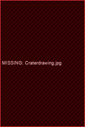
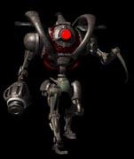
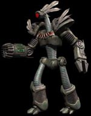
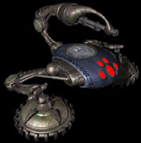

Characters
Zax

Rollin Triskin “Zax”: Born 2318 son of Tallis and Marion Triskin. His parents, fearing that they would not be able to get him out of the system, were forced to place him with his uncle. They hugged their boy and promised they would come for him as soon as they could. Months turned into years and the years turned into his life. Zax never saw or heard from his parents again.
Cave Dweller
 This
soft-shelled four-legged arachnid resides deep in the wet caverns of LV-42-3.
Though very slow moving, they can kill enemy and prey alike with the venomous
spray shot from their mouths.
This
soft-shelled four-legged arachnid resides deep in the wet caverns of LV-42-3.
Though very slow moving, they can kill enemy and prey alike with the venomous
spray shot from their mouths.
Jungle Creature
 These
creatures can usually be found in packs throughout the jungle regions.
These speedy two-legged beasts use their powerful jaws to feast upon the
native wild boar and any unsuspecting Korbo.
These
creatures can usually be found in packs throughout the jungle regions.
These speedy two-legged beasts use their powerful jaws to feast upon the
native wild boar and any unsuspecting Korbo.
Higher Orb Slayer

These Bots are like their lower counterparts but with one exception. The Higher Orb Slayer wields a more powerful orb that is fired from a cannon on its right arm.
Lord Om Overseers
 Lord
Overseers are similar to Master Overseers but do not take part in the
daily routines of the Korbo slave camps. Their job is to serve the needs
of Om. Lords can be found mostly near the inner chambers of the facilities
to which Om itself resides. They are darker in color than the Masters
and pack a much more powerful projectile. A Companion Drone is usually
found with these evil Bots.
Lord
Overseers are similar to Master Overseers but do not take part in the
daily routines of the Korbo slave camps. Their job is to serve the needs
of Om. Lords can be found mostly near the inner chambers of the facilities
to which Om itself resides. They are darker in color than the Masters
and pack a much more powerful projectile. A Companion Drone is usually
found with these evil Bots.
Master Om Overseers

These highly intelligent Bots are the right hand of Om. Master Overseers control other Bots and coordinate their activities in gathering resources for the construction of facilities. Their other purpose involves the gathering and enslaving of Korbo.Master Overseers are equipped with shields and a powerful right gun.
Rogcoil
 These
Cyborg are lightly armed and are directly controlled by Om. Rogcoil often
patrol in groups. They can be seen around Korbo villages, herding the
Korbo to their doom. Although they are not heavily armored, they can still
put up a fight and are extremely effective at intimidating the Korbo.
These
Cyborg are lightly armed and are directly controlled by Om. Rogcoil often
patrol in groups. They can be seen around Korbo villages, herding the
Korbo to their doom. Although they are not heavily armored, they can still
put up a fight and are extremely effective at intimidating the Korbo.
Scorpio Flyer

The Scorpio Flyer is a larger Bot that hovers about a foot over the ground. These Bots can be found near Om's strongholds to fend off large groups of Korbo rebels. They are equipped with large lasers and an energy grenade thrower.